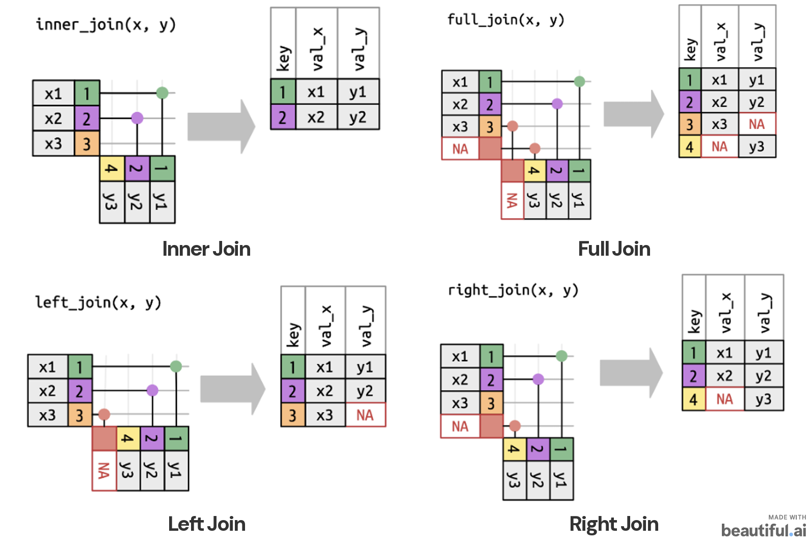

[1] 2.5DS 3100 | Fundamentals of Data Science
Programming and Markdown basics, Data Wrangling
Dr. Satadisha Saha Bhowmick
UNIT 1
Programming & Reproducible Analysis
Working with R, Python, Jupyter, and Quarto

W.E.B. Du Bois Portrait Gallery:
Visualizing Black America
Learning Objective
What we want to accomplish:
Different programming ecosystems but one workflow.
By the end of this unit, you should be able to:
- explain why we use Markdown/Quarto for reproducible analysis;
- learn seamless integration of code, output, and narrative in an analysis document;
- recognize the basic object types used in R and Python;
- learn constructs to import external data in both languages;
- perform basic data-wrangling tasks such as filtering, renaming, creating variables, and joining tables.
Note
Your programming language is a tool, not the goal.
We will demonstrate ideas that are transferable across programming languages and show equivalent R and Python code.
Part 1: Reproducible analysis
From code to an analysis report
Anatomy of a report
A professional analysis report should have the following components:
- Narrative — What question are we asking? What did we find?
- Code — What did we do to obtain the result?
- Output — What did the code produce?
- Visuals — Tables, figures, and other evidence.
We use Markdown to combine these components into a single document.
What is Markdown?
Markdown is a lightweight markup language to format text using plain-text syntax.
| Goal | Markdown |
|---|---|
| Heading | # Heading |
| Subheading | ## Subheading |
| Bold | **bold** |
| Italic | *italic* |
| Inline code | `mean(x)` |
| Bullet | - item |
The same Markdown ideas work across R Markdown, Quarto, and Jupyter Notebooks.
Quarto: the common publishing layer
Quarto lets us combine:
- Markdown narrative
- executable code
- figures and tables
- equations
- citations
- reproducible output
Why use it?
- organized code
- professional reports
- seamless integration of analysis and explanation
- the same publishing framework can support R and Python
R Markdown and Quarto
R Markdown and Quarto use very similar document structure. Quarto is a more general-purpose publishing platform that supports multiple languages, including R and Python.
R Markdown
Quarto
The key idea is the same:
Your document describes both what you want to say and how the analysis was produced.
Code chunks / cells
In R Markdown / Quarto, code can be controlled through chunk options.
R
Python
The surrounding syntax differs, but the underlying workflow is the same:
write code → execute code → inspect output → explain the result
Showing code vs. showing output
An R code chunk is written as:
Min. 1st Qu. Median Mean 3rd Qu. Max.
1.00 1.75 2.50 2.50 3.25 4.00 Some syntax specifications:
echo = TRUE→ show the codeecho = FALSE→ hide the codeeval = TRUE→ execute the codeeval = FALSE→ do not execute the codewarning = FALSE→ suppress warningsmessage = FALSE→ suppress messages
Activity: Your first Quarto report
Create your first reproducible analysis in Quarto.
Create a new Quarto document (.qmd) that combines executable code, a short explanation in markdown, and the output.
Your task
Create a new Quarto document and give it an appropriate title and author in the YAML header.
Choose R or Python and write code that: creates a collection containing the values
4, 8, 6, 10, 12and calculates and reports its mean, minimum, and maximum.Add a short Markdown paragraph explaining what your code is doing and what the results tell you.
Render the
.qmddocument to HTML and inspect the output. Make sure the narrative, code, and results are all displayed correctly.Open the rendered HTML file in your browser and use Print → Save as PDF to create a PDF version of your report.
Before submitting
Check that your report contains:
- a title and your name;
- a short narrative explanation;
- executable R or Python code;
- the resulting output; and
- a clearly presented interpretation of the results.
Submission
Submit both files to Brightspace: Both the source .qmd file and the rendered PDF are required.
YourName_Quarto_Activity.qmdYourName_Quarto_Activity.pdf
Part 2
Programming basics: objects, values, and functions
Data Types, Data Structures and Objects
Both R and Python organize the information we work with as objects.
An object’s type and structure determine what information it represents and what operations can be performed on it.
Broadly speaking, object has:
- a name
- a value
- a type / structure and other attributes
- operations or functions that can act on it
This is an object-oriented way of thinking even when we are not writing formal classes.
Naming objects
R
Python
Both statements mean:
Create a value and bind it to the name
vec1.
Naming conventions: Use descriptive names
percent_belowschool_nameprep_time
Avoid names that hide meaning, such as x1, thing, or stuff, once the analysis becomes substantial.
Assignment is not equality
A common source of confusion:
R
Python
In both languages:
- assignment gives a name a value;
==asks whether two values are equal.
Functions
A function is a reusable operation that:
- accepts input;
- performs some computation;
- may return output.
R
Python
Packages and libraries
Packages collect reusable code. Install a package once; import/load it when you need it.
R
Install once:
Use in a session:
Python
Install once:
Import into a program:
Part 3
How data is organized in R and Python
Basic data types
Both R and Python have a small set of atomic data types that are the building blocks for more complex structures.
Basic / atomic R types
| Type | Example |
|---|---|
| logical | TRUE, FALSE |
| integer | 10L |
| double | 10.5 |
| character | "data" |
Basic Python types
| Type | Example |
|---|---|
bool |
True, False |
int |
10 |
float |
10.5 |
str |
"data" |
Remember
Both R and Python allow arithmetic operations on logical values, treating
TRUE/Trueas 1 andFALSE/Falseas 0. This is an example of implicit type conversion.R treats even a single string as a character vector of length 1, whereas Python treats a string as a sequence of characters. You can see the difference by creating
"Hello"in both languages and comparing R’slength()with Python’slen().Unlike R’s built-in
data.frame, aDataFrameis not a built-in Python data structure. It is provided by libraries such as pandas.
R Data Structures: a useful map
R provides several core data structures for organizing and working with data.
These structures differ in their dimensionality, the types of values they can contain, and how their elements are accessed.
| R object | Dimension | Key idea |
|---|---|---|
| Vector | 1-D | elements share a common atomic type |
| Matrix | 2-D | elements share a common atomic type |
| Array | multi-D | elements share a common atomic type |
| Data frame | 2-D | each column can have a different type |
| List | 1-D container | elements can be different types or objects |
| Factor | 1-D | categorical values with defined levels |
These distinctions matter because they determine what a data structure can contain and how we can access and manipulate its elements.
Python: the closest everyday structures
While there are not like for like equivalents for every R structure in Python, the general idea prevails.
| R idea | Python analogue | Important difference |
|---|---|---|
| Vector | list / NumPy array |
Python lists may mix types |
| Matrix | NumPy array | NumPy arrays are typically homogeneous |
| Array | NumPy array | n-dimensional structure |
| Data frame | pandas DataFrame |
tabular data by rows and columns |
| List | list |
general heterogeneous container |
| Factor | pandas.Categorical |
categorical values with defined categories |
Note
The goal is not to memorize a one-to-one mapping of data structures across languages. The goal is to understand the structural idea and then learn the language-specific implementation.
R vectors
Vectors are one-dimensional and generally contain one data type.
A useful sequence shortcut is 1:5. This creates a vector of integers from 1 to 5.
Note
R and Python handle integer sequences differently:
- In R,
1:5produces1, 2, 3, 4, 5— both endpoints are included. - In Python,
range(1, 5)produces1, 2, 3, 4— the stop value5is excluded.
Therefore, the Python equivalent of R’s 1:5 would be range(1, 6).
Python lists
The everyday Python list is also one-dimensional, but unlike a basic R vector it can contain mixed types.
[1, 2, False, 'yes'][1, 2, 3, 4, 5]The mixed list remains a list.
This is a major conceptual difference from a homogeneous R vector.
Guess the output type: R
What type of object is stored in this list?
Think before running it.
Guess the output type: Python
What type of object is stored in this list?
Key idea
Python lists can contain mixed types, so no coercion is required and lists can be heterogeneous.
Remember
R: homogeneous vector → coercion
Python: heterogeneous list → mixed values allowed
Matrices
They are two dimensional structures in either language.
Remember
By default, R fills a matrix column by column (byrow = FALSE).
For the vector c(1, 2, 3, 4):
- the first column receives
1, 2 - the second column receives
3, 4
To fill the matrix row by row instead, specify byrow = TRUE
Matrix indexing
R: 1-based indexing
means:
row 1, column 2
Python: 0-based indexing
means:
row 1, column 2
This difference is worth memorizing.
Named Indexing
R organically supports named indexing for matrices and even data frames. You can assign names to rows and columns and then use those names to access elements.
[1] 3Python typically uses explicit labels (for its rows and columns through index and column names) through a tabular structure such as a pandas DataFrame rather than relying on matrix row/column names in the same way.
That’s the data structure you will see in the next section and more commonly use during large scale data analysis.
Tabular Data
A data frame is a 2-D table in which rows represent observations, columns represent variables, and columns may have different types.
R data.frame
name score subject
1 A 90 Math
2 B 84 <NA>Python pandas DataFrame
name score subject
0 A 90 Math
1 B 84 NaNBoth are designed to deal with tabular data.
Indexing Dataframes
Often we need to probe into specific rows and columns of a data frame. Both R and Python provide multiple ways to access data frame elements.
R
R uses the [row, column] syntax to access elements of a data frame.
Python
Python uses the .loc and .iloc methods to access elements of a DataFrame. .loc[] uses row/column labels, while .iloc[] uses their integer positions.
Missing values
Missing data require explicit attention.
R
NA represents missingness.
name score subject
[1,] FALSE FALSE FALSE
[2,] FALSE FALSE TRUE[1] 0 1[1] 0[1] 87Python
Pandas commonly uses NaN for missing values.
Note
What you are missing can be key information.
- Do not silently ignore it. Missingness can be informative and may require special handling.
- Missingness can be random or systematic. If it is systematic, it may bias your results.
- Missingness can introduce errors in your analysis if not handled properly.
Heterogeneous Lists
R
Python
Remember
A list is a heterogeneous container for objects/data types.
R lists can contain vectors, matrices, data frames, or other lists.
The major difference in these structures across the two language ecosystems is in the way they are indexed and accessed, and that R lists can have named elements.
Indexing: a comparison
| Goal | R | Python |
|---|---|---|
| First element | x[1] |
x[0] |
| Second element | x[2] |
x[1] |
| Last element | x[length(x)] |
x[-1] |
| Named column in table | df$col1 |
df["col1"] |
Remember
R starts at 1. Python starts at 0 which is more in line with the convention across most programming languages.
R: [ ] versus [[ ]] versus $
There are few ways you can access lists in R. These are worth understanding early on.
[ ] — Subset
The result is still a list containing one element.
[[ ]] — Element
The result is the object stored inside the list.
The key distinction
x[1]asks: give me a subset of the list → object returned remains a list.x[[1]]asks: give me the object inside position 1 → hence the surrounding list structure is removed.x$numberasks: give me the object namednumber→ convenient when list elements have meaningful names.
Python indexing tools
Python commonly uses square brackets:
For a dictionary that is indexed by keys, you can use the key name to extract the value:
Categorical data
Some variables represent a fixed set of categories rather than arbitrary text.
Examples:
"ELA","Math","Science""Freshman","Sophomore","Junior","Senior"
R: factor
[1] Math ELA Math Science
Levels: ELA Math Science[1] "ELA" "Math" "Science"A factor stores categorical values using a set of levels.
Python: pandas.Categorical
['Math', 'ELA', 'Math', 'Science']
Categories (3, str): ['ELA', 'Math', 'Science']Index(['ELA', 'Math', 'Science'], dtype='str')A pandas Categorical represents values using a defined set of categories.
Think about it
Why might we want to represent a categorical variable as a factor (R) or categorical variable (pandas) rather than simply storing it as a string?
Give 1–2 reasons.
Why does this matter?
Storing categories as strings can lead to errors and inconsistencies (capitalization, typos, etc.). Using a factor or categorical variable makes an explicit set of valid categories.
The definition and ordering of categories can affect how results are displayed and interpreted.
Ordered data
Sometimes categories have a meaningful order. For examples, the months of the year, or a rating scale such as Low < Medium < High. Often observations need to be compared or sorted based on this order.
R
The levels tell R the intended ordering.
Python / pandas
The categories and ordered=True tell pandas how the values should be ordered.
Remember
Note that if entries do not match the defined levels or categories, they will be treated as missing values or NA. This is a common source of confusion when working with categorical data especially in R where missing values can be contagious to subsequent operations.
Dates and Times
These commonly appear on your datasets. Dates may look like strings, but representing them as actual dates allows us to sort, compare, and calculate with them. Consider:
It helps to make this a specialized date object rather than a string so that the computer understands its position in time.
Note
Once dates are represented correctly, we can perform operations such as calculating elapsed time.
Learn more about date and time handling in R and Python here:
- R: Dates and Times
- Python: Time Series
Bonus: Tibbles
Note
A tibble is the tidyverse’s modern version of an R data.frame.
# A tibble: 3 × 2
name score
<chr> <dbl>
1 A 82
2 B 91
3 C 88A tibble is still a 2-D tabular object:
- rows represent observations
- columns represent variables
- different columns can have different types
Why tibbles?
Compared with a traditional data.frame, tibbles provide some conveniences for data analysis:
- cleaner printing of large datasets
- natural integration with the tidyverse
- many
dplyroperations naturally return tibbles
Part 4
Reading data into an analysis
Finding the data
Before loading a dataset, it is important to know where the data lives.
- Downloads folder?
- Project folder?
data/folder? \(\rightarrow\) good practice is to keep data in a dedicated folder within your project directory- Somewhere else?
A professional project should have a predictable directory structure.
Understanding the relative file path
A file path tells the us where a file lives relative to our current working directory. Suppose your project directory is organized as follows:
./ — Current directory
If your current directory is DS3100/ then
Start here, enter the
datafolder, and findmy_data.csv.
So the path resolves to DS3100/data/my_data.csv
Reading relative paths
./→ start in the current directory../→ move to the parent directory (one folder level up)../../→ move two directory levels updata/→ enter a folder nameddata
Paths are read from left to right, one directory at a time.
Locating the current file path
Obtaining the path to the current working directory is a useful first step.
R
Python
Path separators
Modern Python code should generally use / even on Windows, or use pathlib for portable paths.
Python
R
The important idea is relative paths: to make your analysis work from your project directory you need to evaluate the paths of assets relative to that directory.
Knowing your file type
Common formats include:
| Extension | Typical use |
|---|---|
.csv |
comma-separated table |
.txt |
text / delimited data |
.xlsx, .xls |
Excel |
.RData, .rds |
R objects/data |
.sav |
SPSS |
.dat |
generic / statistical software |
.sas7bdat |
SAS |
.mat |
MATLAB |
The extension helps you choose the right reader.
Loading the data
This is where file extension matters. Different file types require different readers.
Here we write some code to load data from a CSV file into a dataframe in memory. The syntax differs, but the reasoning is the same: file → reader → object in memory
R
head() is a base R function that returns the first few rows of a data frame.
| district_number | district_name | school_number | school_name | year | subgroup | overall_subject | percent_below | percent_approaching | percent_on_track | percent_mastered | percent_on_mastered | baseline_year | percent_below_previous | percent_approaching_previous | percent_on_track_previous | percent_mastered_previous | percent_on_mastered_previous |
|---|---|---|---|---|---|---|---|---|---|---|---|---|---|---|---|---|---|
| 0 | State of Tennessee | 0 | 2018 | All Students | ELA | 19.5 | 47.7 | 28.1 | 4.7 | 32.8 | 2017 | 20.0 | 45.9 | 28.0 | 6.1 | 34.1 | |
| 0 | State of Tennessee | 0 | 2018 | Black/Hispanic/Native | ELA | 30.1 | 50.5 | 17.5 | 1.9 | 19.4 | 2017 | 30.9 | 49.2 | 17.6 | 2.3 | 19.9 |
Python
head() is a pandas method that returns the first few rows of a DataFrame.
| district_number | district_name | school_number | school_name | year | subgroup | overall_subject | percent_below | percent_approaching | percent_on_track | percent_mastered | percent_on_mastered | baseline_year | percent_below_previous | percent_approaching_previous | percent_on_track_previous | percent_mastered_previous | percent_on_mastered_previous |
|---|---|---|---|---|---|---|---|---|---|---|---|---|---|---|---|---|---|
| 0 | State of Tennessee | 0 | NaN | 2018 | All Students | ELA | 19.5 | 47.7 | 28.1 | 4.7 | 32.8 | 2017.0 | 20.0 | 45.9 | 28.0 | 6.1 | 34.1 |
| 0 | State of Tennessee | 0 | NaN | 2018 | Black/Hispanic/Native | ELA | 30.1 | 50.5 | 17.5 | 1.9 | 19.4 | 2017.0 | 30.9 | 49.2 | 17.6 | 2.3 | 19.9 |
Other file formats
R
Reading RData, R’s native binary format:
For SPSS, data coming from the SPSS (Statistical Package for the Social Sciences) software suite:
Python
For Excel:
For SPSS, common Python tools include pyreadstat or pandas interfaces built around it.
Note
When you encounter an unfamiliar file format, it is important knowing how to find the appropriate reader and read its documentation.
The data-loading checklist
Before analysis, ask:
What function/package should I use?
What does the documentation say?
What object will the function to load data return?
Did the data load correctly?
Do the variables have the types and values I expect?
Never assume that a successful import means the data were read correctly.
Activity: Tennessee education data
💻 Your turn
Using R or Python, read tenn2018.csv into a data frame called ten. Use what you have learned about data frames, objects, and indexing to answer the following:
Print the first seven observations in
ten.Determine the number of rows and columns in the data frame.
Print the column names. How many different variables are available? How many do you think are categorical?
Access and print the
overall_subjectcolumn.In the
pandasdocumentation, look up.loc[]and.iloc[]. What is the difference between these two methods?In R, the equivalent task can be performed using the
[row, column]operator and R’s 1-based indexing. Now answer the following:- Access the value of
district_namefor the first observation. - Access the value of
percent_belowfor the first observation.
- Access the value of
Bonus: How many columns in this dataset have missing values? List all of them.
📚 Need a reference?
If you get stuck, consult the documentation for your language:
- R: R Documentation — Data Frames
- R indexing: R Documentation — Select Parts of a Data Frame
- Python / pandas: pandas — Intro to Data Structures
- pandas indexing: pandas — Indexing and Selecting Data
Part of the activity is learning how to find what you need in documentation.
Part 5
Data wrangling
What is data wrangling?
Data wrangling is the process of transforming raw data into a clean, structured, and usable format for analysis.
A useful way to think about a table:
- Variables are columns.
- Observations are rows.
- Values are the individual entries.
Most early data-wrangling tasks change, reorganize, or create one or more of these dimensions.
Tidy data
Hadley Wickham’s tidy data framework provides a useful standard for organizing tabular data:
- Each variable forms a column.
- Each observation forms a row.
- Each value occupies a cell.
A tidy dataset therefore has a consistent structure in which columns represent variables and rows represent observations.
Core wrangling operations
We will practice:
- Subsetting / filtering rows
- Selecting columns
- Renaming variables
- Creating variables
- Handling missing values
- Appending observations
- Joining tables
These operations are conceptually the same in R and Python.
Filtering rows: R
Using dplyr: R package for data manipulation. Provides functions for common data-wrangling tasks such as filtering, selecting, renaming, grouping and summarizing data.
The filter() function asks which rows satisfy the condition I specify?
Example 1. Remove observations with missing values
school overall_subject percent_below_cap
1 A ELA 12.5
2 C ELA 18.2
3 D Math 9.7Filtering rows: R
Example 2. Filter to one subject
Suppose we only want observations for the subject ELA.
school overall_subject percent_below_cap
1 A ELA 12.5
2 C ELA 18.2df→ start with the data frame.%>%→ pass that data frame to the next operation.is.na(percent_below_cap)→ asks whether each value ofpercent_below_capis missing.!→ means NOT, so!is.na(...)identifies values that are not missing.filter()→ keeps only rows for which that condition isTRUE.
Filtering rows: Python
In python, the primary means to read datasets and perform data manipulation is through the popular open-source pandas library.
Example 1: Remove observations with missing values
Suppose we want to keep only rows where percent_below has a recorded value.
school overall_subject percent_below_cap
0 A ELA 12.5
2 C ELA 18.2
3 D Math 9.7Example 2: Keep observations from one category
Suppose we want to keep only observations for the subject ELA.
AND and OR conditions
Suppose we want to filter out observations that satisfy both of the following conditions:
overall_subject == "ELA"ANDpercent_below_cap >= 20
R
[1] school overall_subject percent_below_cap
<0 rows> (or 0-length row.names)Python
AND and OR conditions
For conditions joined by OR where satisfying either condition is sufficient:
R
school overall_subject percent_below_cap
1 A ELA 12.5
2 C ELA 18.2Python
school overall_subject percent_below_cap
0 A ELA 12.5
2 C ELA 18.2Warning
In pandas, put each condition in parentheses when combining conditions with & or |.
Membership: %in% versus in
R:
school state score percent_below_cap
1 A TN 82 12.5
2 B KY 91 NA
3 D GA 88 9.7
4 F TN 94 15.3Python:
school state score percent_below_cap
0 A TN 82.0 12.5
1 B KY 91.0 NaN
3 D GA 88.0 9.7
5 F TN 94.0 15.3Checking a single value
To ask whether "TN" appears anywhere in the state column:
The conceptual question is the same:
Is this value a member of this set?
Renaming variables
R
school_name state score percent_below_cap
1 A TN 82 12.5
2 B KY 91 NA
3 C VA NA 18.2
4 D GA 88 9.7
5 E NC 85 4.2
6 F TN 94 15.3Python
school_name state score percent_below_cap
0 A TN 82.0 12.5
1 B KY 91.0 NaN
2 C VA NaN 18.2
3 D GA 88.0 9.7
4 E NC 85.0 4.2
5 F TN 94.0 15.3Same operation:
Change the label, not the underlying values.
Creating a new variable
Suppose df contains the percentage of students below a given threshold in the current and previous periods and we want to create a new variable that measures the difference between the two.
R
In dplyr, mutate() is used to create new variables (columns) or modify existing ones.
Python
This is a central data-science pattern:
new variable = transformation of existing variables
Summaries
A summary statistic reduces a variable to a useful numerical description, such as its mean, median, minimum, or maximum.
R
Calculate the mean of the score column:
Here, df$score selects the score column, while na.rm = TRUE tells R to ignore missing values when calculating the mean. In R na.rm stands for “NA remove”.
Warning
Missing data in R is contagious and the presence of NA values can propagate through calculations returning NA as the answer. Therefore, it is important to explicitly handle missing values when computing summary statistics.
Python
Here, df["score"] selects the score column and .mean() calculates its mean. By default, pandas ignores missing values when computing the mean.
Grouped summaries in R
What is the average percent_below_cap for each school?
Sometimes we want a summary for each group rather than one value for the entire dataset.
# A tibble: 6 × 2
school_name mean_percent_below_cap
<chr> <dbl>
1 A 12.5
2 B NaN
3 C 18.2
4 D 9.7
5 E 4.2
6 F 15.3Note
group_by(school_name)divides the observations into groups by school.summarize()calculates a summary for each group.mean_percent_below_capis the name of the newly created summary variable.
Think about it
Why does School B remain in the resulting tibble showing the grouped summary even though we used na.rm = TRUE?
Grouped summaries in Python
What is the average percent_below_cap for each school?
Sometimes we want a summary for each group rather than one value for the entire dataset.
school_name
A 12.5
B NaN
C 18.2
D 9.7
E 4.2
F 15.3
Name: percent_below_cap, dtype: float64Note
.groupby("school_name")groups observations by school.["percent_below_cap"]selects the variable to summarize..mean()calculates its mean separately for each school.
Appending observations in R
Sometimes new data contain additional observations with the same variables as an existing dataset.
Suppose we have two tables containing information about different schools.
school state score
1 A TN 82
2 B KY 91
3 C GA 88
4 D TN 94Note
bind_rows() places the observations in df2 underneath those in df1.
Appending observations in Python
Think of append = add observations.
school state score
0 A TN 82
1 B KY 91
2 C GA 88
3 D TN 94Note
pd.concat()combines the two DataFrames vertically.
ignore_index=Truecreates a new sequential row index for the combined DataFrame.
Activity: Appending DataFrames with Different Columns
Your turn
Create two small data frames that do not have exactly the same columns.
- Give both data frames at least two columns in common.
- Give
df1a column that is not present indf2. - Give
df2a different column that is not present indf1. - Append the observations in
df2todf1. - Print the resulting data frame and inspect it carefully.
What happens to the columns that are not shared by both data frames?
Try this in R or Python, depending on the language you are working with.
Before running your code: Predict the number of rows and columns the resulting data frame will have. What do you expect to see where information is unavailable?
Joining tables: R
A join combines information from two tables by matching values of a shared key.
Suppose one table contains school locations and another contains school scores. Here, school_number is the key shared by both tables.
school_number school_name score
1 101 Central 82
2 102 West 91
3 103 East NAA left join keeps every row from schools and adds matching information from scores.
Note
full_join(schools, scores, by = "school_number") would instead keep all keys from both tables, including school 104.
Joining tables: Python
In pandas, the merge() function is used to join two DataFrames based on a common key. The how parameter specifies the type of join.
The pandas equivalent of a full join is specified with the parameter how="outer". Again, in this example, school_number is the key used to match observations.
school_number school_name score
0 101 Central 82.0
1 102 West 91.0
2 103 East NaN
3 104 NaN 88.0Note
Think of a join as: match observations using a key → bring their information together
Unlike appending, a join does not simply place one table underneath another.
Join types
| Concept | R | pandas |
|---|---|---|
| Inner | inner_join() |
how="inner" |
| Left | left_join() |
how="left" |
| Right | right_join() |
how="right" |
| Full | full_join() |
how="outer" |
The join type determines which keys/rows are retained.

Activity: What will each join produce?
✏️ Pen-and-paper first
Consider these two tables:
Table A
| key | x |
|---|---|
| 1 | x1 |
| 2 | x2 |
| 3 | x3 |
Table B
| key | y |
|---|---|
| 2 | y2 |
| 4 | y4 |
Without writing any code, draw the resulting table for each join:
- Inner join
- Left join — Table A is the left table
- Right join — Table A is the left table
- Full / outer join
For each result, ask yourself: Which key values should remain, and where should missing values appear?
💻 Now test your predictions
Create Table A and Table B in R or Python, then perform all four joins using key as the matching variable.
Compare the outputs with your predictions. Were you right?
Wrap-up:
What should feel familiar across languages?
The syntax changes but the thinking does not
Before the next class
Make sure you can:
Note
- open a
.qmdor.ipynbfile in VS Code; - run a simple Python notebook;
- run a simple R notebook;
- identify the first element of a sequence in each language;
- create a simple vector/list;
- read a CSV file;
- explain the difference between a row, column, and value;
- explain what a data frame / DataFrame is;
- filter a table using one condition.
Bring your questions to class! 😄